trust_schools_binary ~ sex_mrp + pid3_mrp + (1|age_mrp) + (1|educ_mrp) + (1|race_mrp) + (1|STATE) + (1 | STATE:educ_mrp) + (1 | STATE:race_mrp) + (1 | STATE:pid3_mrp) + pid3_mrp:trump_z + trump_zDraft of Overall Report on MRP Estimates
Introduction
This project seeks to use multilevel regression and poststratification (MRP) to produce trust estimates for public schools at the state and school district level. It consists of a 2024 cross-section estimating state-level trust and comparing public schools to seven other American institutions, a time series tracing state-level trust from 1973 to 2025 using Gallup data, and an exploratory extension of the 2024 data to approximately 13k school districts.
Data
Survey Data
The primary survey data for the 2024 cross-section and institutional comparisons comes from YouGov baselines in three waves taken in March, October, and November of 2024. After cleaning and deduplicating repeated respondents, the pooled sample contains approximately 100k respondents with valid responses to the institutional trust questions. The trust question asks respondents how much confidence they have in several institutions with responses on a four-point scale: “a great deal,” “quite a lot,” “some,” and “very little.” Responses are collapsed to a binary of high trust (“a great deal” or “quite a lot”) versus low trust (“some” or “very little”). An ordinal robustness check is reported in the appendix. The time series analysis uses Gallup’s Confidence in Institutions survey, which has asked the same trust question annually from 1973 to 2025. Gallup surveys approximately 1,000 adults nationally per year, yielding roughly 51k usable observations across the full period. It also includes a “none” option for confidence, folded into low.
Census Data
Poststratification frames for the 2024 cross-section are constructed from the ACS 2023 5-year PUMS accessed via the tidycensus package. Respondents are classified into cells defined by state, age (4 groups), education (4 groups), race/ethnicity (5 groups), and sex (2 categories). Group quarters residents are excluded. For the time series, poststratification frames are built from IPUMS Census PUMS (1980, 1990, 2000) and ACS 5-year PUMS (2005-2009, 2014-2018, 2020-2024), each mapped to the period whose midpoint it best approximates. Race is coded as White/Black/Other throughout to maintain consistent cells across the full time series, since Gallup did not include a Hispanic ethnicity identifier before 1993. District-level demographic tables for the district extension are drawn from ACS 5-year estimates via the Census Bureau’s TIGRIS interface, covering age/sex, education, and race/ethnicity at the school district level.
Party ID Data
Because the ACS does not measure party identification, the joint distribution of demographics and partisanship in the poststratification frame is estimated using a synthetic joint distribution. State-level partisan marginals are drawn from CCES pooled across 2021-2024 and weighted.
Election Data
Presidential election results for 1976-2020 are drawn from the MIT Election Data and Science Lab (MEDSL). Results for 2024 are from the Federal Election Commission. For the time series, vote shares are averaged across the presidential elections falling within each period and z-scored within period. District-level partisan composition (Democratic vote plurality) is drawn from school district-level vote shares.
District-Level Covariates
District-level covariates for the district extension are Democratic vote plurality, per-pupil expenditure, enrollment, and child poverty rate. Democratic vote plurality is drawn from school district-level presidential vote shares for 2024, falling back to 2020 where 2024 data is unavailable. Per-pupil current expenditure is from the NCES School District Finance Survey (F-33) for 2021-22, log-transformed. Enrollment is from the CCD directory for 2022, also log-transformed. Child poverty rate is from the Census Bureau’s Small Area Income and Poverty Estimates (SAIPE) for 2021. All continuous covariates are z-scored. District-level data are accessed via the Urban Institute’s educationdata package. Note the covariates span 2021-2024, so there is a modest timing mismatch with the 2024 survey data.
2024 Cross-Section
State-level estimates of trust in public schools using MRP from 2024.
Data
Respondents are classified into demographic cells defined by 4 age groups (under 30, 30 to 44, 45 to 64, 65+), 4 education levels (high school or less, some college, college graduate, postgraduate), 5 racial/ethnic categories (White, Black, Hispanic, Asian, Other), sex (man, woman), and 3 party identification categories (Democrat, Independent, Republican). Because the ACS does not measure partisanship, the joint distribution of demographics and party identification is estimated using a synthetic joint distribution (smoothfix), which rakes the ACS cells to match CCES partisan shares within each state. An alternative method (bmlogit) modelling the relationship produced nearly identical results (r > 0.99 at both the cell and final estimate level).
Model
The multilevel model is a Bayesian logistic regression estimated with brms fitted on unweighted likelihood. Representativeness is handled by the poststratification frame, following standard MRP practice. The following formula was used:
Full brms output in the appendix.
Estimate Est.Error Q2.5 Q97.5
Intercept 0.19284439 0.29326826 -0.37068268 0.82644506
sex_mrpWoman -0.18184058 0.01364520 -0.20904965 -0.15578373
pid3_mrpIndependent -1.00448140 0.03888740 -1.07864106 -0.92892186
pid3_mrpRepublican -1.48717376 0.03854645 -1.56324919 -1.40990256
trump_z 0.06771626 0.06964310 -0.07062574 0.20472345
pid3_mrpIndependent:trump_z -0.14561085 0.08836981 -0.32050874 0.02262811
pid3_mrpRepublican:trump_z 0.05302812 0.09243696 -0.12901587 0.23601822$age_mrp
$age_mrp$sd
Estimate Est.Error Q2.5 Q97.5
Intercept 0.2619264 0.1875247 0.0925416 0.74172
$educ_mrp
$educ_mrp$sd
Estimate Est.Error Q2.5 Q97.5
Intercept 0.3718352 0.2259361 0.1483775 0.9715454
$race_mrp
$race_mrp$sd
Estimate Est.Error Q2.5 Q97.5
Intercept 0.2960041 0.1560876 0.1321848 0.7061593
$STATE
$STATE$sd
Estimate Est.Error Q2.5 Q97.5
Intercept 0.1154269 0.03602752 0.03654025 0.1836378
$`STATE:educ_mrp`
$`STATE:educ_mrp`$sd
Estimate Est.Error Q2.5 Q97.5
Intercept 0.04141413 0.01656034 0.006574839 0.07263992
$`STATE:pid3_mrp`
$`STATE:pid3_mrp`$sd
Estimate Est.Error Q2.5 Q97.5
Intercept 0.1567728 0.01753085 0.1255273 0.1930206
$`STATE:race_mrp`
$`STATE:race_mrp`$sd
Estimate Est.Error Q2.5 Q97.5
Intercept 0.09374023 0.01747171 0.06166253 0.130937Party identification has the largest individual-level effects. Relative to Democrats, Independents are about 1 log-odds point lower (coefficient = -1.00, 95% CI: -1.08 to -0.93) and Republicans about 1.5 points lower (coefficient = -1.49, 95% CI: -1.56 to -1.41). Education (SD = 0.37), race (SD = 0.30), and age (SD = 0.26) contribute lesser variation through their random intercepts. The overall state intercept is small (SD = 0.12) but the STATE:pid3_mrp interaction (SD = 0.16) indicates that the size of the partisan gap varies meaningfully across states. The STATE:educ_mrp and STATE:race_mrp interactions are smaller (SD = 0.04 and 0.09 respectively), suggesting that education and racial patterns in trust are fairly consistent geographically.
Among the fixed effects, women are somewhat less likely to trust public schools than men after controlling for partisanship (coefficient = -0.18, 95% CI: -0.21 to -0.15). The trump_z coefficient is near zero (0.07, 95% CI: -0.07 to 0.21), and neither interaction between trump_z and party identification is statistically distinguishable from zero. The state-level partisan context of a state does not appear to shape trust in public schools beyond what individual party identification and the state random intercepts already capture. The state-level variation which does exist likely reflects state-level factors not reducible to a partisan gradient. A model comparison (Appendix F) confirms this: dropping trump_z changes estimates by less than 1 percentage point.
Estimates
State estimates range from 27.4% in Louisiana to 44.4% in the District of Columbia, a spread of 17 percentage points. A full state table and map are below.
# A tibble: 51 × 3
State `MRP Estimate` `95% CI`
<chr> <chr> <chr>
1 DC 44.4% 39.8% – 49.1%
2 CT 42.6% 40.3% – 45.0%
3 NJ 41.7% 40.1% – 43.3%
4 NY 41.5% 40.5% – 42.6%
5 MA 41.4% 39.7% – 43.2%
6 UT 40.0% 37.5% – 42.7%
7 IA 39.9% 37.7% – 42.2%
8 NE 39.9% 37.0% – 42.8%
9 CA 38.8% 37.7% – 39.8%
10 VT 38.3% 34.2% – 42.6%
11 MN 37.7% 36.0% – 39.4%
12 ME 37.7% 34.7% – 40.6%
13 CO 37.3% 35.6% – 39.0%
14 WA 37.1% 35.5% – 38.6%
15 KS 37.0% 34.5% – 39.6%
16 RI 37.0% 33.6% – 40.4%
17 MD 37.0% 35.1% – 38.9%
18 SD 36.9% 33.0% – 40.9%
19 IL 36.7% 35.3% – 38.0%
20 WI 36.3% 34.7% – 38.0%
21 VA 36.2% 34.7% – 37.7%
22 MI 35.9% 34.5% – 37.3%
23 NH 35.9% 33.0% – 38.8%
24 GA 35.4% 34.0% – 36.8%
25 OR 35.3% 33.6% – 37.1%
26 WY 35.2% 31.0% – 39.8%
27 TX 35.0% 34.0% – 36.1%
28 ND 34.6% 30.6% – 38.8%
29 AR 34.5% 32.1% – 36.9%
30 FL 34.5% 33.4% – 35.5%
31 MT 34.3% 31.3% – 37.4%
32 MS 34.1% 31.3% – 36.8%
33 PA 33.6% 32.4% – 34.7%
34 OH 33.3% 32.0% – 34.5%
35 DE 33.2% 30.0% – 36.4%
36 NC 33.1% 31.8% – 34.4%
37 IN 33.0% 31.4% – 34.7%
38 AK 32.9% 29.1% – 36.8%
39 HI 32.6% 29.1% – 36.3%
40 KY 32.5% 30.6% – 34.4%
41 MO 32.3% 30.7% – 33.9%
42 NM 32.2% 29.6% – 34.8%
43 TN 32.2% 30.6% – 33.8%
44 AZ 31.9% 30.5% – 33.4%
45 ID 31.0% 28.3% – 33.8%
46 SC 30.9% 29.2% – 32.7%
47 AL 29.7% 27.8% – 31.7%
48 OK 29.3% 27.3% – 31.5%
49 NV 28.8% 26.7% – 30.9%
50 WV 28.6% 26.0% – 31.2%
51 LA 27.4% 25.3% – 29.5%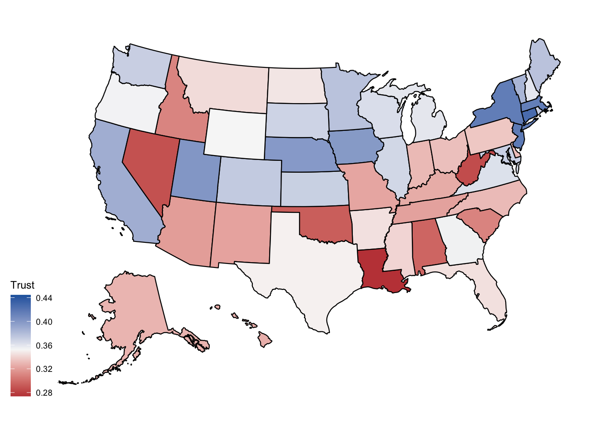
Internal Consistency
To assess the estimates, I compared the MRP values to unweighted state-level survey means. The correlation between MRP estimates and unweighted survey means is r = 0.92. MRP-survey discrepancy is weakly negatively correlated with state sample size (r = -0.11), consistent with mild shrinkage in small states.
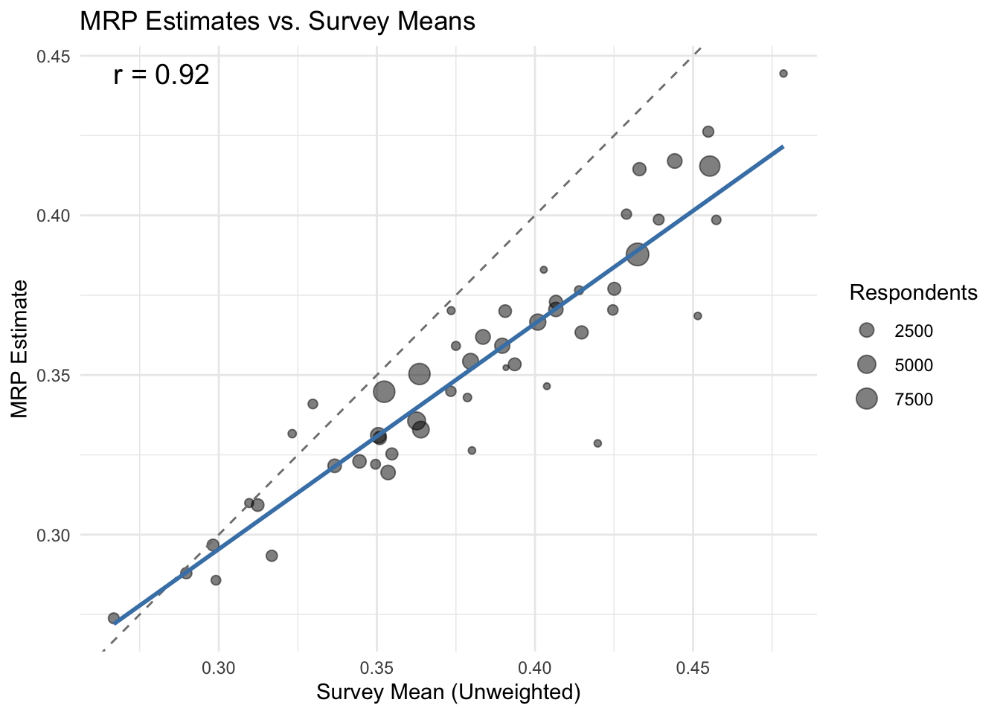
Institutional Comparison
Comparison of state-level trust in public schools using MRP from 2024 to trust in seven other American institutions: Congress, the media, the military, police, religious leaders, the Supreme Court, and universities.
Data
The same YouGov pooled sample and poststratification frame are used for all eight institutions. Sample sizes vary across institutions (from approximately 73k for universities to 153k for media) because YouGov administered the trust questions for different institutions to different subsets of respondents. Because cell-level support varies across institutions, partial pooling is more aggressive for institutions with smaller samples (notably universities at 73k), which contributes to wider posterior intervals on state random effects.
Model
All eight models were run with a common specification, which is simpler than the cross-sectional schools specification for compute reasons.
trust_institution ~ sex_mrp + pid3_mrp + (1|age_mrp) + (1|educ_mrp) + (1|race_mrp) + (1|STATE) + (1 | STATE:educ_mrp) + (1 | STATE:race_mrp) + trump_zFull brms output in the appendix.
Results
Summary Stats
# A tibble: 8 × 10
institution pid_rep pid_rep_se trump_z trump_z_se sd_state mean_trust sd_trust
<chr> <dbl> <dbl> <dbl> <dbl> <dbl> <dbl> <dbl>
1 congress 0.367 0.0171 -0.0302 0.0551 0.131 0.178 0.0247
2 media -1.57 0.0191 -0.0493 0.0359 0.0712 0.188 0.0299
3 military 0.406 0.0178 0.115 0.0322 0.0245 0.629 0.0332
4 police 1.12 0.0169 0.0413 0.0399 0.0617 0.485 0.0477
5 religious 1.15 0.0186 0.179 0.0587 0.161 0.248 0.0459
6 scotus 2.15 0.0151 0.104 0.0420 0.0767 0.348 0.0516
7 universiti… -1.86 0.0224 -0.0418 0.0434 0.0711 0.367 0.0457
8 schools -1.41 0.0176 0.0329 0.0542 0.147 0.354 0.0378
# ℹ 2 more variables: min_trust <dbl>, max_trust <dbl>The military leads in overall trust (63%), while Congress and the media sit at the bottom (18% and 19%). Schools are in the middle of the distribution at 35%, nearly identical to universities (37%) and the Supreme Court (35%). The spread of state-level estimates varies considerably across institutions, with the police and Supreme Court having particularly wide ranges (roughly 30 percentage points from lowest to highest state).
Coefficients
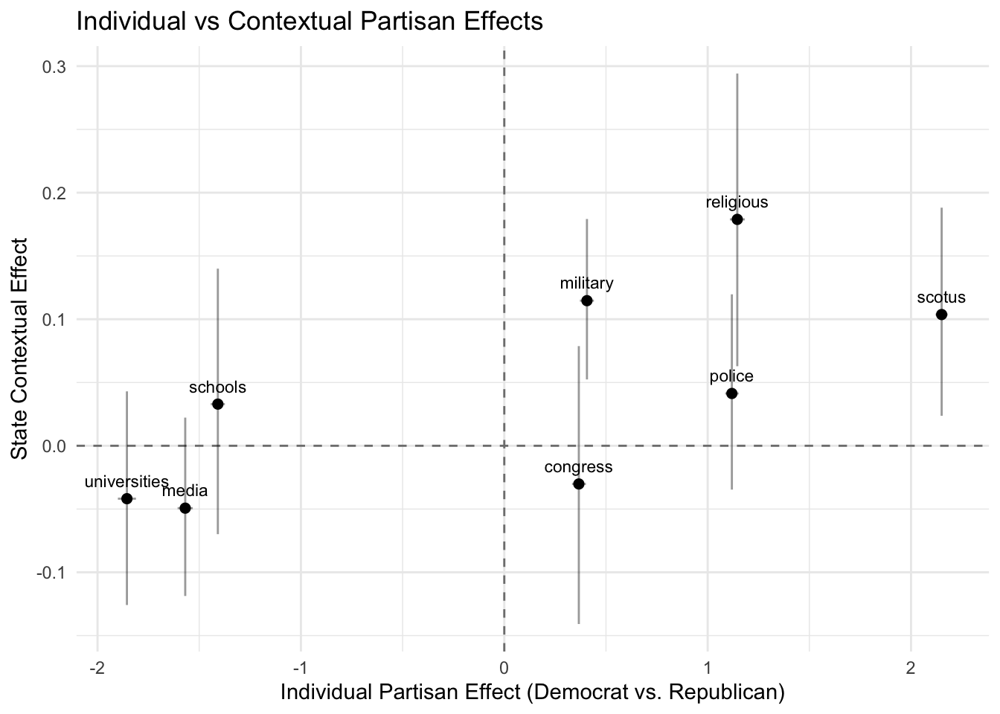
The coefficient plot reveals a clear two-cluster structure. Universities, media, and schools all have large negative Republican coefficients, meaning Republicans are substantially less trusting than Democrats. On the other side, the Supreme Court, police, religious leaders, and the military all have positive Republican coefficients. Congress sits near zero on the individual partisan dimension (everyone hates it equally).
The vertical dimension shows whether the political context of a state adds anything beyond individual partisanship. Most institutions cluster near zero on this axis. Religious leaders, the military, and the Supreme Court show modest positive contextual effects, meaning that living in a more Republican state is associated with somewhat higher trust in these institutions even after accounting for individual party identification. Schools are essentially at zero on this dimension, consistent with the finding from the cross-section that state-level partisan context has little additional predictive power for school trust.
Trust Correlation w/ 2024 Voting Pattern
# A tibble: 8 × 2
institution r_trump
<chr> <dbl>
1 universities -0.920
2 media -0.878
3 schools -0.582
4 congress -0.0168
5 religious 0.714
6 police 0.759
7 military 0.896
8 scotus 0.909 The state-level correlation between MRP trust estimates and the state’s Trump vote share confirms this pattern. Universities (-0.92) and media (-0.88) show near-perfect alignment with state partisanship, meaning the map of trust in universities is essentially a presidential election map. Schools are negatively correlated with Trump vote share (-0.58), but considerably less so. Among institutions in the Republican-coded cluster, SCOTUS (0.91) and military (0.90) show the tightest alignment. Congress is essentially uncorrelated with state partisanship (-0.02). Note that because trump_z enters the model as a predictor, these correlations do include a mechanical component, but I believe the relative ordering across institutions should hold. The trump_z coefficient is statistically indistinguishable from zero for five of eight institutions (including universities and media which show the strongest partisan correlations).
Residuals
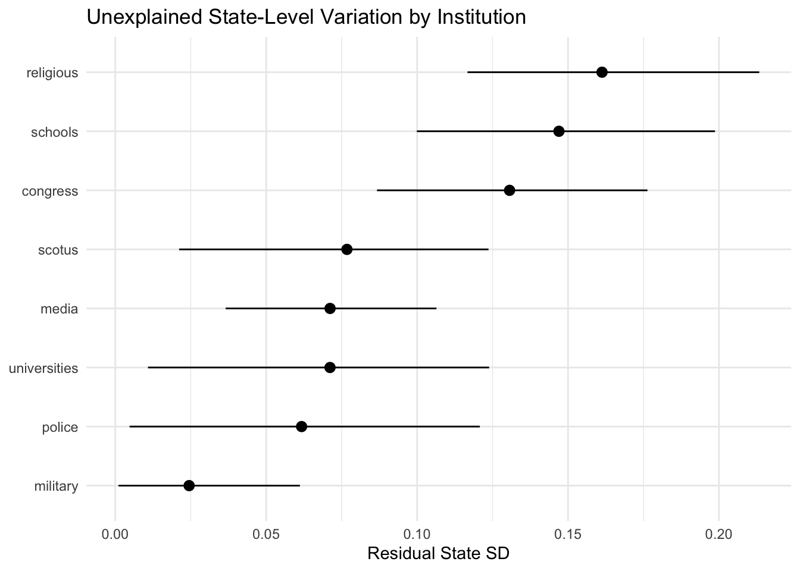
After accounting for demographics, individual partisanship, and state partisan context, schools are clustered with religious leaders and congress towards a higher level of unexplained state-level variance. Most other institutions cluster between 0.02 and 0.08 on this measure. School trust varies across states in ways that the standard demographic and partisan predictors do not explain. Note that this is conditioned on this model specification, and should not be compared to the cross-sectional model for schools earlier.
Demographic Patterns
# A tibble: 8 × 4
institution rangeeduc rangerace rangeage
<chr> <dbl> <dbl> <dbl>
1 congress 0.205 0.604 1.25
2 media 0.478 0.486 0.602
3 military 0.111 0.519 0.972
4 police 0.0999 0.707 0.926
5 religious 0.173 0.670 0.716
6 scotus 0.175 0.383 0.627
7 universities 0.820 0.440 0.772
8 schools 0.531 0.570 0.366These comparisons should be treated with caution, since different base rates make the comparisons between institutions on a log-odds scale not straightforward, and also because the ranges are estimated from independent models. That being said, two potential patterns stand out. First, schools and universities share a notably larger education gradient than any other institution (0.53 and 0.82 log-odds range, compared to below 0.20 for every other institution). More educated respondents are substantially more likely to trust schools and universities, which does not seem to hold for the military, police, religious leaders, the Supreme Court, or Congress. Second, schools have the flattest age gradient of any institution (0.37, compared to 1.25 for Congress, 0.97 for military, and 0.93 for police). This is potentially surprising given that younger adults are more likely to have school-aged children, though the analysis does not include parental status, which could be masking a sharper distinction along that dimension.
Gallup Time Series
Data
Because Gallup’s annual samples are far too small for state-level estimation in any single year (~20 respondents per state on average), observations are pooled into six roughly decade-long periods aligned to major education policy eras: - 1973-1982 (pre-Nation at Risk) - 1983-1991 (post-Nation at Risk reform) - 1992-2001 (pre-NCLB) - 2002-2009 (NCLB) - 2010-2019 (Common Core and Race to the Top) - 2020-2025 (post-Covid) An alternative approach using rolling 10-year windows is used for the correlation time series, which smooths out the boundaries between fixed periods, similar to Pacheco (2011).
Race is coded as White/Black/Other throughout to maintain consistent poststratification cells. Gallup did not include a Hispanic ethnicity identifier before 1993, so pre-1993 Hispanic respondents are coded by self-reported race. A robustness check grouping post-1993 Hispanics as White produced MRP estimate correlations above 0.93 for all periods with maximum point shifts under 3 percentage points. Gallup’s education variable does not distinguish postgraduates from college graduates, so three categories are used throughout the time series. The age bins are also slightly different than YouGov’s, the second spanning 30-49 rather than 30-44. Poststratification frames are built from IPUMS Census PUMS (1980, 1990, 2000) and ACS 5-year PUMS (2005-2009, 2014-2018, 2020-2024), each mapped to the period whose midpoint it best approximates.
Models
Each period is estimated separately using a multilevel logistic regression via glmer:
trust_binary ~ sex_mrp + age_mrp + educ_mrp + race_mrp + (1 | STATE)A second specification adds state-level Republican presidential vote share (z-scored within each period) as a predictor. Republican vote share is averaged across the presidential elections falling within each period: - 1976 and 1980 for 1973-1982 - 1984 and 1988 for 1983-1991 - 1992, 1996, and 2000 for 1992-2001 - 2004 and 2008 for 2002-2009 - 2012 and 2016 for 2010-2019 - 2020 and 2024 for 2020-2025 Election data are drawn from the MIT Election Data + Science Lab for 1976-2020 and FEC results for 2024. The two specifications produce nearly identical estimates (correlations above 0.89 in all periods), and the version with the partisan covariate is used for maps and state-level displays. All correlations with partisan variables use the baseline model without the partisan covariate. For the rolling correlation, elections within two years of the window boundaries are averaged.
Results
National Trend Line
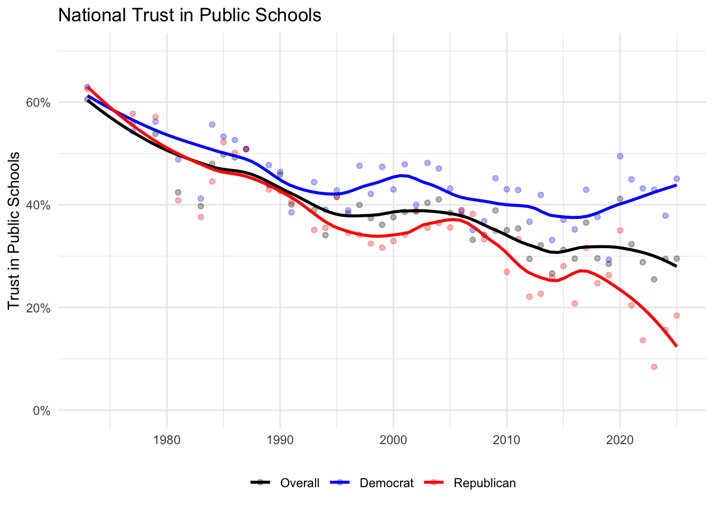
Trust in public schools has declined substantially over the past five decades, from roughly 60% reporting high trust in the mid-1970s to around 30% today. The decline is not uniform across parties. Democratic trust has remained comparatively stable, fluctuating between 40% and 50% across the period. Republican trust has collapsed, falling from roughly 60% in the 1970s to below 20% by 2025. The overall trend is primarily driven by this Republican decline, with the sharpest drop beginning around 2010.
Period Map
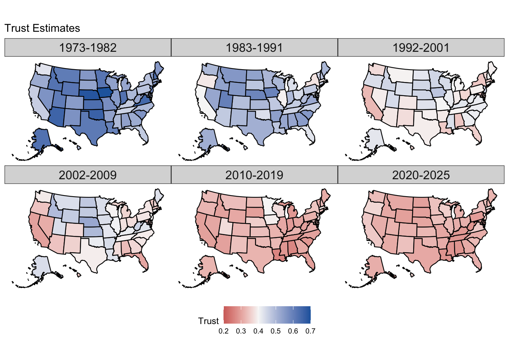
The maps show two patterns simultaneously. First, the overall decline, with almost every state shifting from blue (high trust) toward red (low trust) across the six periods. Second, a geographic resorting. In the earliest period, trust is highest in the Mountain West and upper Midwest and relatively uniform across the country. By 2020-2025, the geography has reorganized along partisan lines, with the highest trust in the Northeast and Pacific coast.
Rank Map
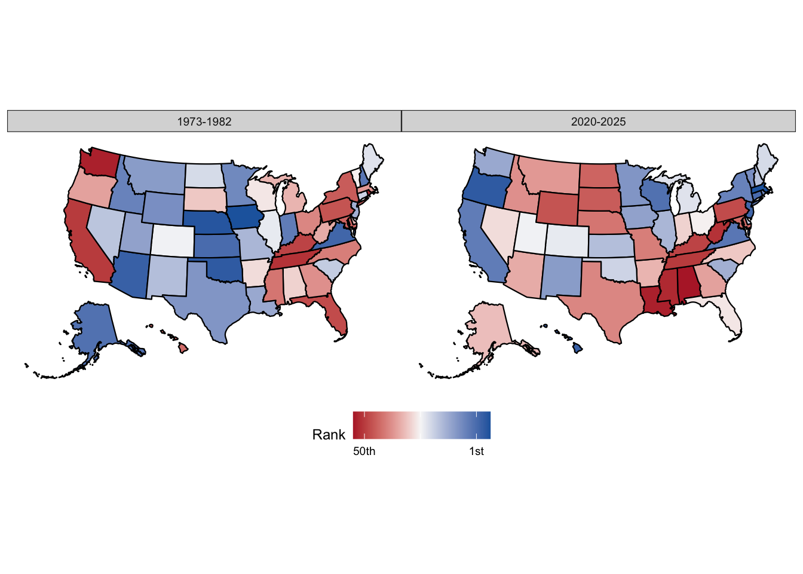
The rank map makes the resorting more visible by removing the overall decline and showing only each state’s relative position within its period. In 1973-1982, the spatial pattern is largely unstructured. By 2020-2025, it closely resembles a presidential election map, with blue states ranking highest and red states lowest.
Period Correlations
# A tibble: 6 × 5
period_mrp cor_est cor_lo cor_hi midpoint
<chr> <dbl> <dbl> <dbl> <dbl>
1 1973-1982 0.290 0.0313 0.495 1978.
2 1983-1991 0.369 0.0652 0.580 1987
3 1992-2001 0.182 -0.0107 0.382 1996.
4 2002-2009 0.340 0.0975 0.520 2006.
5 2010-2019 -0.176 -0.437 0.0672 2014.
6 2020-2025 -0.450 -0.637 -0.246 2022.The state-level correlation between MRP trust estimates and contemporaneous Republican vote share shifts from positive in earlier periods to clearly negative in the most recent. Three of the six period correlations exclude zero in their bootstrap confidence intervals: 1983-1991 (r = 0.37, [0.07, 0.58]), 2002-2009 (r = 0.34, [0.10, 0.52]), and 2020-2025 (r = -0.45, [-0.64, -0.25]). The 1973-1982 estimate (r = 0.29) has a lower bound essentially at zero, and the 1992-2001 (r = 0.18) and 2010-2019 (r = -0.18) windows both straddle zero. These bootstrap intervals were constructed by resampling states and reflect uncertainty from the number of states, not estimation uncertainty in the MRP estimates themselves. The sign-flip itself seems robust but not the magnitude of any individual period. The trajectory from positive correlations in the 1970s-80s to a clearly negative correlation by the 2020s is supported by both the fixed-period and rolling-window estimates, and is consistent with the emergence of the large individual-level partisan gap visible in the national trend line. The magnitudes of the early positive correlations should be interpreted with more caution than the 2020-2025 endpoint, given smaller samples and greater estimation uncertainty in the earliest periods.
Rolling Correlation
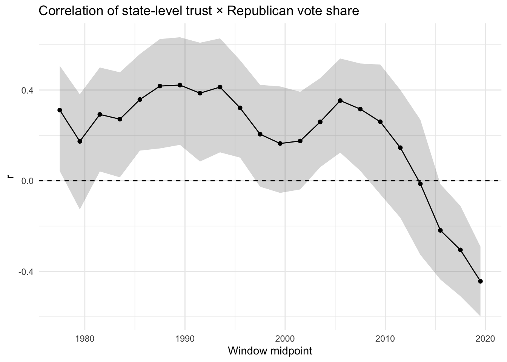
The rolling window analysis dates the crossover more precisely. The correlation is stable and moderately positive for three decades, then collapses sharply beginning around 2008-2010, crossing zero at approximately 2013-2014.
Variance Decomposition
# A tibble: 6 × 5
period_mrp n var_nopid var_pid pct_reduction
<chr> <int> <dbl> <dbl> <dbl>
1 1973-1982 5825 0.120 0.125 -3.8
2 1983-1991 11080 0.0725 0.0727 -0.3
3 1992-2001 8874 0.0335 0.0353 -5.5
4 2002-2009 7539 0.0596 0.0589 1.2
5 2010-2019 11067 0.0350 0.0302 13.7
6 2020-2025 6678 0.0218 0.0168 22.7A separate analysis compares the state-level variance explained by models with and without individual-level party identification. In the first three periods (1973-2001), adding partisanship to the model absorbs essentially zero state-level variance. Starting in 2010-2019, party identification explains 13.7% of state-level variance, rising to 22.7% by 2020-2025. This suggests that partisanship became a meaningful source of geographic variation in school trust only in the last fifteen years, with state-level differences being driven by different factors prior. Note that overall state-level variance also declines across the period, so the rising PID share reflects both an absolute increase in the variance attributable to partisanship and a decline in other state-level sources of variation. The relative claim, that partisanship became a meaningful source of geographic variation only in the last fifteen years, is supported either way.
District-level Extension
An exploratory district-level MRP model is estimated using the YouGov survey with respondents matched to their school districts. The model includes the same individual-level predictors and state-level structure as the cross-sectional model, plus a district random intercept and district-level covariates for Democratic vote plurality, child poverty rate, log enrollment, and log per-pupil expenditure. The estimates carry no uncertainty intervals due to computation constraints for Bayesian modeling.
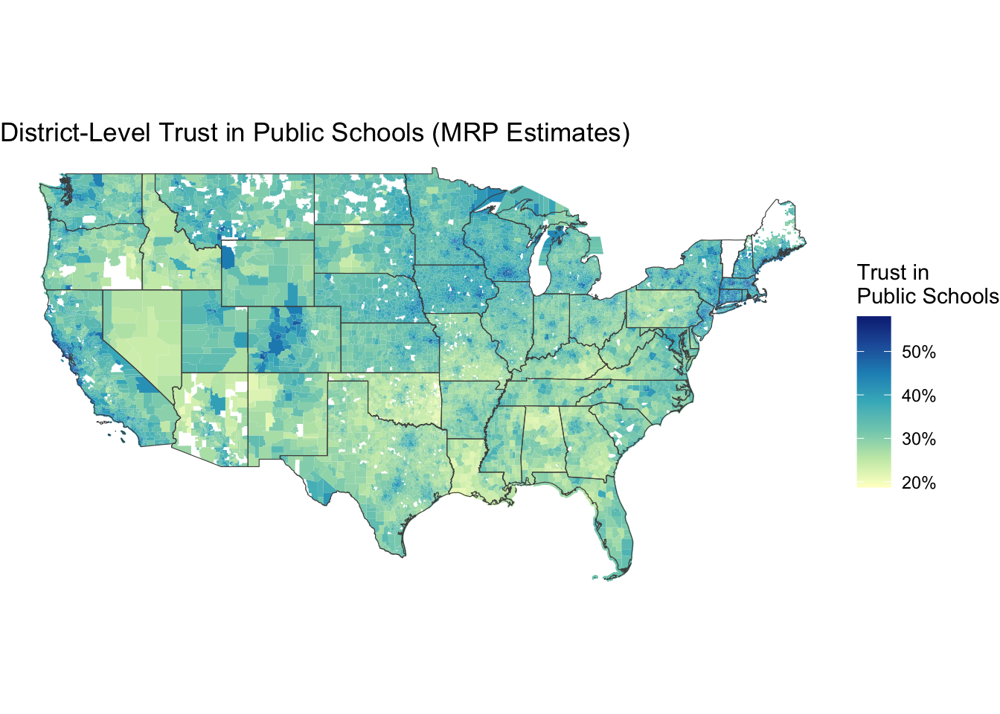
Partisan composition is the dominant correlate of district-level trust but does not fully account for it. The geographic pattern is broadly consistent with the state-level results, with higher estimated trust in the Northeast and upper Midwest and lower trust across the South and Mountain West. Within states, variation tracks both the partisan composition and socioeconomic characteristics of districts. When aggregated back to states, these estimates correlate at r = 0.89 with the direct state-level MRP. These estimates should be treated as exploratory.
Conclusion
Trust in public schools has declined substantially over the past five decades, driven primarily by a collapse in Republican trust that has geographically resorted the map of school confidence along partisan lines. Among American institutions, schools occupy a distinctive position, being individually partisan like universities and media, but (at the state level) less geographically polarized. A district-level extension may potentially be feasible.
Limitations
General: - No parental status included in any pipeline. The flat age gradient for schools could be masking a parent/non-parent divide. - All scales collapsed to binary. An ordinal robustness check (appendix) confirms stable state rankings (Spearman r = 0.92). - Income not included due to modest relative effect to education and partisanship, but its exclusion could affect specific subgroup estimates. - Synthetic joint distribution: The two methods tested agree, but are not the same as external validation of the partisan marginals. - YouGov is an opt-in panel, not a probability sample. MRP mitigates due to breaking down to demographic cells but cannot eliminate selection biases not captured by the model’s predictors.
Time series: - Small sample size of ~1k/year nationally requires decade-long pooling, which assumes within-period stability. Weakest for 2010-2019, which spans the Common Core backlash and early Trump era. - Gallup only introduced a Hispanic identifier in 1993. Robustness check confirms minimal impact (r > 0.93, max shift under 3pp). - The time series models do not include interaction terms, due to Gallup data sparsity. - No uncertainty propagation: MRP point estimates are treated as fixed in the time series correlations and variance decomposition.
Cross institution: - Cross-institutional comparisons of demographic effect magnitudes are descriptive, rather than formally tested..
District level: - Inclusion of state-level random effects leads to somewhat discrete state boundaries - No uncertainties included due to computational constraints
Methodological Sources
All analyses use MRP, which combines individual-level survey responses with Census population counts to produce subnational estimates that are more reliable than simple survey disaggregation. The general framework follows Park, Gelman, and Bafumi (2004) and Lax and Phillips (2009, 2012). The MRP workflow is adapted from Kuriwaki’s ccesMRPrun and ccesMRPprep packages. Synthetic joint distributions for incorporating partisanship into ACS poststratification frames use Kuriwaki’s synthjoint package. The rolling-window approach to the time series follows Pacheco (2011).
Appendix
A: Full Model Output (Cross-Section)
Family: bernoulli
Links: mu = logit
Formula: trust_schools_binary ~ sex_mrp + pid3_mrp + (1 | age_mrp) + (1 | educ_mrp) + (1 | race_mrp) + (1 | STATE) + (1 | STATE:educ_mrp) + (1 | STATE:race_mrp) + (1 | STATE:pid3_mrp) + pid3_mrp:trump_z + trump_z
Data: yougov_cleaner_synth (Number of observations: 100995)
Draws: 4 chains, each with iter = 2000; warmup = 1000; thin = 1;
total post-warmup draws = 4000
Multilevel Hyperparameters:
~age_mrp (Number of levels: 4)
Estimate Est.Error l-95% CI u-95% CI Rhat Bulk_ESS Tail_ESS
sd(Intercept) 0.26 0.19 0.09 0.74 1.00 2159 2717
~educ_mrp (Number of levels: 4)
Estimate Est.Error l-95% CI u-95% CI Rhat Bulk_ESS Tail_ESS
sd(Intercept) 0.37 0.23 0.15 0.97 1.00 2166 2785
~race_mrp (Number of levels: 5)
Estimate Est.Error l-95% CI u-95% CI Rhat Bulk_ESS Tail_ESS
sd(Intercept) 0.30 0.16 0.13 0.71 1.00 1929 2351
~STATE (Number of levels: 51)
Estimate Est.Error l-95% CI u-95% CI Rhat Bulk_ESS Tail_ESS
sd(Intercept) 0.12 0.04 0.04 0.18 1.00 660 765
~STATE:educ_mrp (Number of levels: 204)
Estimate Est.Error l-95% CI u-95% CI Rhat Bulk_ESS Tail_ESS
sd(Intercept) 0.04 0.02 0.01 0.07 1.00 1036 1339
~STATE:pid3_mrp (Number of levels: 153)
Estimate Est.Error l-95% CI u-95% CI Rhat Bulk_ESS Tail_ESS
sd(Intercept) 0.16 0.02 0.13 0.19 1.00 1569 2466
~STATE:race_mrp (Number of levels: 253)
Estimate Est.Error l-95% CI u-95% CI Rhat Bulk_ESS Tail_ESS
sd(Intercept) 0.09 0.02 0.06 0.13 1.00 1541 2276
Regression Coefficients:
Estimate Est.Error l-95% CI u-95% CI Rhat Bulk_ESS
Intercept 0.19 0.29 -0.37 0.83 1.00 2378
sex_mrpWoman -0.18 0.01 -0.21 -0.16 1.00 8637
pid3_mrpIndependent -1.00 0.04 -1.08 -0.93 1.00 3317
pid3_mrpRepublican -1.49 0.04 -1.56 -1.41 1.00 3045
trump_z 0.07 0.07 -0.07 0.20 1.00 3049
pid3_mrpIndependent:trump_z -0.15 0.09 -0.32 0.02 1.00 3176
pid3_mrpRepublican:trump_z 0.05 0.09 -0.13 0.24 1.00 3008
Tail_ESS
Intercept 2474
sex_mrpWoman 2988
pid3_mrpIndependent 3006
pid3_mrpRepublican 3123
trump_z 3037
pid3_mrpIndependent:trump_z 2882
pid3_mrpRepublican:trump_z 3451
Draws were sampled using sample(hmc). For each parameter, Bulk_ESS
and Tail_ESS are effective sample size measures, and Rhat is the potential
scale reduction factor on split chains (at convergence, Rhat = 1).A specification with party identification as a random rather than fixed effect produced nearly identical coefficients and state-level estimates.
B: Full Model Output (Institutional Comparisons)
Family: bernoulli
Links: mu = logit
Formula: trust_congress_binary ~ sex_mrp + pid3_mrp + (1 | age_mrp) + (1 | educ_mrp) + (1 | race_mrp) + (1 | STATE) + (1 | STATE:educ_mrp) + (1 | STATE:race_mrp) + trump_z
Data: yougov_cleaner_synth (Number of observations: 151729)
Draws: 4 chains, each with iter = 2000; warmup = 1000; thin = 1;
total post-warmup draws = 4000
Multilevel Hyperparameters:
~age_mrp (Number of levels: 4)
Estimate Est.Error l-95% CI u-95% CI Rhat Bulk_ESS Tail_ESS
sd(Intercept) 0.87 0.44 0.38 2.02 1.00 1807 2410
~educ_mrp (Number of levels: 4)
Estimate Est.Error l-95% CI u-95% CI Rhat Bulk_ESS Tail_ESS
sd(Intercept) 0.18 0.15 0.06 0.56 1.00 1724 2075
~race_mrp (Number of levels: 5)
Estimate Est.Error l-95% CI u-95% CI Rhat Bulk_ESS Tail_ESS
sd(Intercept) 0.33 0.18 0.14 0.82 1.00 1447 2226
~STATE (Number of levels: 51)
Estimate Est.Error l-95% CI u-95% CI Rhat Bulk_ESS Tail_ESS
sd(Intercept) 0.13 0.02 0.09 0.18 1.00 1549 1904
~STATE:educ_mrp (Number of levels: 204)
Estimate Est.Error l-95% CI u-95% CI Rhat Bulk_ESS Tail_ESS
sd(Intercept) 0.11 0.01 0.08 0.14 1.00 1501 2519
~STATE:race_mrp (Number of levels: 254)
Estimate Est.Error l-95% CI u-95% CI Rhat Bulk_ESS Tail_ESS
sd(Intercept) 0.10 0.02 0.07 0.13 1.00 1553 2744
Regression Coefficients:
Estimate Est.Error l-95% CI u-95% CI Rhat Bulk_ESS Tail_ESS
Intercept -1.21 0.47 -2.03 -0.15 1.00 1592 2344
sex_mrpWoman -0.06 0.02 -0.09 -0.03 1.00 9281 3213
pid3_mrpIndependent -0.61 0.02 -0.65 -0.57 1.00 6831 2442
pid3_mrpRepublican 0.37 0.02 0.33 0.40 1.00 6130 2693
trump_z -0.03 0.06 -0.14 0.08 1.00 2579 2572
Draws were sampled using sample(hmc). For each parameter, Bulk_ESS
and Tail_ESS are effective sample size measures, and Rhat is the potential
scale reduction factor on split chains (at convergence, Rhat = 1). Family: bernoulli
Links: mu = logit
Formula: trust_media_binary ~ sex_mrp + pid3_mrp + (1 | age_mrp) + (1 | educ_mrp) + (1 | race_mrp) + (1 | STATE) + (1 | STATE:educ_mrp) + (1 | STATE:race_mrp) + trump_z
Data: yougov_cleaner_synth (Number of observations: 152969)
Draws: 4 chains, each with iter = 2000; warmup = 1000; thin = 1;
total post-warmup draws = 4000
Multilevel Hyperparameters:
~age_mrp (Number of levels: 4)
Estimate Est.Error l-95% CI u-95% CI Rhat Bulk_ESS Tail_ESS
sd(Intercept) 0.40 0.25 0.15 1.10 1.00 1366 1748
~educ_mrp (Number of levels: 4)
Estimate Est.Error l-95% CI u-95% CI Rhat Bulk_ESS Tail_ESS
sd(Intercept) 0.33 0.22 0.12 0.93 1.00 1362 2059
~race_mrp (Number of levels: 5)
Estimate Est.Error l-95% CI u-95% CI Rhat Bulk_ESS Tail_ESS
sd(Intercept) 0.29 0.17 0.13 0.75 1.00 1308 1812
~STATE (Number of levels: 51)
Estimate Est.Error l-95% CI u-95% CI Rhat Bulk_ESS Tail_ESS
sd(Intercept) 0.07 0.02 0.04 0.11 1.01 937 947
~STATE:educ_mrp (Number of levels: 204)
Estimate Est.Error l-95% CI u-95% CI Rhat Bulk_ESS Tail_ESS
sd(Intercept) 0.05 0.01 0.02 0.08 1.00 896 1112
~STATE:race_mrp (Number of levels: 254)
Estimate Est.Error l-95% CI u-95% CI Rhat Bulk_ESS Tail_ESS
sd(Intercept) 0.06 0.01 0.03 0.09 1.01 773 1567
Regression Coefficients:
Estimate Est.Error l-95% CI u-95% CI Rhat Bulk_ESS Tail_ESS
Intercept -0.41 0.33 -0.97 0.38 1.00 1174 1311
sex_mrpWoman -0.36 0.01 -0.39 -0.34 1.00 5064 2675
pid3_mrpIndependent -1.08 0.02 -1.11 -1.05 1.00 5379 3209
pid3_mrpRepublican -1.57 0.02 -1.61 -1.53 1.00 5438 3306
trump_z -0.05 0.04 -0.12 0.02 1.00 2483 2713
Draws were sampled using sample(hmc). For each parameter, Bulk_ESS
and Tail_ESS are effective sample size measures, and Rhat is the potential
scale reduction factor on split chains (at convergence, Rhat = 1). Family: bernoulli
Links: mu = logit
Formula: trust_military_binary ~ sex_mrp + pid3_mrp + (1 | age_mrp) + (1 | educ_mrp) + (1 | race_mrp) + (1 | STATE) + (1 | STATE:educ_mrp) + (1 | STATE:race_mrp) + trump_z
Data: yougov_cleaner_synth (Number of observations: 100860)
Draws: 4 chains, each with iter = 2000; warmup = 1000; thin = 1;
total post-warmup draws = 4000
Multilevel Hyperparameters:
~age_mrp (Number of levels: 4)
Estimate Est.Error l-95% CI u-95% CI Rhat Bulk_ESS Tail_ESS
sd(Intercept) 0.64 0.32 0.27 1.50 1.00 2079 2531
~educ_mrp (Number of levels: 4)
Estimate Est.Error l-95% CI u-95% CI Rhat Bulk_ESS Tail_ESS
sd(Intercept) 0.09 0.08 0.02 0.29 1.00 1393 1945
~race_mrp (Number of levels: 5)
Estimate Est.Error l-95% CI u-95% CI Rhat Bulk_ESS Tail_ESS
sd(Intercept) 0.27 0.15 0.12 0.65 1.00 1593 2079
~STATE (Number of levels: 51)
Estimate Est.Error l-95% CI u-95% CI Rhat Bulk_ESS Tail_ESS
sd(Intercept) 0.02 0.02 0.00 0.06 1.00 979 1835
~STATE:educ_mrp (Number of levels: 204)
Estimate Est.Error l-95% CI u-95% CI Rhat Bulk_ESS Tail_ESS
sd(Intercept) 0.06 0.01 0.03 0.08 1.00 965 926
~STATE:race_mrp (Number of levels: 253)
Estimate Est.Error l-95% CI u-95% CI Rhat Bulk_ESS Tail_ESS
sd(Intercept) 0.08 0.01 0.06 0.11 1.00 1388 1996
Regression Coefficients:
Estimate Est.Error l-95% CI u-95% CI Rhat Bulk_ESS Tail_ESS
Intercept 0.42 0.34 -0.28 1.10 1.00 1541 1889
sex_mrpWoman -0.37 0.01 -0.39 -0.34 1.00 7866 2918
pid3_mrpIndependent -0.08 0.02 -0.11 -0.05 1.00 6249 3185
pid3_mrpRepublican 0.41 0.02 0.37 0.44 1.00 6386 3112
trump_z 0.11 0.03 0.05 0.18 1.00 3542 2966
Draws were sampled using sample(hmc). For each parameter, Bulk_ESS
and Tail_ESS are effective sample size measures, and Rhat is the potential
scale reduction factor on split chains (at convergence, Rhat = 1). Family: bernoulli
Links: mu = logit
Formula: trust_police_binary ~ sex_mrp + pid3_mrp + (1 | age_mrp) + (1 | educ_mrp) + (1 | race_mrp) + (1 | STATE) + (1 | STATE:educ_mrp) + (1 | STATE:race_mrp) + trump_z
Data: yougov_cleaner_synth (Number of observations: 101702)
Draws: 4 chains, each with iter = 2000; warmup = 1000; thin = 1;
total post-warmup draws = 4000
Multilevel Hyperparameters:
~age_mrp (Number of levels: 4)
Estimate Est.Error l-95% CI u-95% CI Rhat Bulk_ESS Tail_ESS
sd(Intercept) 0.60 0.33 0.25 1.50 1.00 1606 2173
~educ_mrp (Number of levels: 4)
Estimate Est.Error l-95% CI u-95% CI Rhat Bulk_ESS Tail_ESS
sd(Intercept) 0.10 0.10 0.03 0.33 1.00 1229 1888
~race_mrp (Number of levels: 5)
Estimate Est.Error l-95% CI u-95% CI Rhat Bulk_ESS Tail_ESS
sd(Intercept) 0.36 0.19 0.17 0.82 1.00 1840 2059
~STATE (Number of levels: 51)
Estimate Est.Error l-95% CI u-95% CI Rhat Bulk_ESS Tail_ESS
sd(Intercept) 0.06 0.03 0.00 0.12 1.00 326 611
~STATE:educ_mrp (Number of levels: 204)
Estimate Est.Error l-95% CI u-95% CI Rhat Bulk_ESS Tail_ESS
sd(Intercept) 0.08 0.01 0.05 0.11 1.00 1185 1739
~STATE:race_mrp (Number of levels: 254)
Estimate Est.Error l-95% CI u-95% CI Rhat Bulk_ESS Tail_ESS
sd(Intercept) 0.10 0.02 0.06 0.14 1.00 712 1359
Regression Coefficients:
Estimate Est.Error l-95% CI u-95% CI Rhat Bulk_ESS Tail_ESS
Intercept -0.55 0.35 -1.23 0.25 1.00 1228 1670
sex_mrpWoman -0.21 0.01 -0.24 -0.18 1.00 6360 2979
pid3_mrpIndependent 0.21 0.02 0.18 0.24 1.00 5874 3139
pid3_mrpRepublican 1.12 0.02 1.09 1.15 1.00 5719 3190
trump_z 0.04 0.04 -0.03 0.12 1.00 2849 2587
Draws were sampled using sample(hmc). For each parameter, Bulk_ESS
and Tail_ESS are effective sample size measures, and Rhat is the potential
scale reduction factor on split chains (at convergence, Rhat = 1). Family: bernoulli
Links: mu = logit
Formula: trust_religion_binary ~ sex_mrp + pid3_mrp + (1 | age_mrp) + (1 | educ_mrp) + (1 | race_mrp) + (1 | STATE) + (1 | STATE:educ_mrp) + (1 | STATE:race_mrp) + trump_z
Data: yougov_cleaner_synth (Number of observations: 99225)
Draws: 4 chains, each with iter = 2000; warmup = 1000; thin = 1;
total post-warmup draws = 4000
Multilevel Hyperparameters:
~age_mrp (Number of levels: 4)
Estimate Est.Error l-95% CI u-95% CI Rhat Bulk_ESS Tail_ESS
sd(Intercept) 0.46 0.28 0.18 1.20 1.00 1749 2323
~educ_mrp (Number of levels: 4)
Estimate Est.Error l-95% CI u-95% CI Rhat Bulk_ESS Tail_ESS
sd(Intercept) 0.14 0.11 0.04 0.44 1.00 1872 2483
~race_mrp (Number of levels: 5)
Estimate Est.Error l-95% CI u-95% CI Rhat Bulk_ESS Tail_ESS
sd(Intercept) 0.37 0.19 0.17 0.88 1.00 1747 2442
~STATE (Number of levels: 51)
Estimate Est.Error l-95% CI u-95% CI Rhat Bulk_ESS Tail_ESS
sd(Intercept) 0.16 0.02 0.12 0.21 1.00 1709 2660
~STATE:educ_mrp (Number of levels: 204)
Estimate Est.Error l-95% CI u-95% CI Rhat Bulk_ESS Tail_ESS
sd(Intercept) 0.10 0.01 0.07 0.13 1.00 1653 2629
~STATE:race_mrp (Number of levels: 254)
Estimate Est.Error l-95% CI u-95% CI Rhat Bulk_ESS Tail_ESS
sd(Intercept) 0.03 0.02 0.00 0.08 1.00 1004 1321
Regression Coefficients:
Estimate Est.Error l-95% CI u-95% CI Rhat Bulk_ESS Tail_ESS
Intercept -1.36 0.32 -1.92 -0.62 1.00 1655 1885
sex_mrpWoman -0.20 0.02 -0.23 -0.16 1.00 10428 2931
pid3_mrpIndependent 0.02 0.02 -0.02 0.07 1.00 7024 3110
pid3_mrpRepublican 1.15 0.02 1.11 1.18 1.00 6602 3377
trump_z 0.18 0.06 0.06 0.29 1.00 2402 2961
Draws were sampled using sample(hmc). For each parameter, Bulk_ESS
and Tail_ESS are effective sample size measures, and Rhat is the potential
scale reduction factor on split chains (at convergence, Rhat = 1). Family: bernoulli
Links: mu = logit
Formula: trust_scotus_binary ~ sex_mrp + pid3_mrp + (1 | age_mrp) + (1 | educ_mrp) + (1 | race_mrp) + (1 | STATE) + (1 | STATE:educ_mrp) + (1 | STATE:race_mrp) + trump_z
Data: yougov_cleaner_synth (Number of observations: 152307)
Draws: 4 chains, each with iter = 2000; warmup = 1000; thin = 1;
total post-warmup draws = 4000
Multilevel Hyperparameters:
~age_mrp (Number of levels: 4)
Estimate Est.Error l-95% CI u-95% CI Rhat Bulk_ESS Tail_ESS
sd(Intercept) 0.40 0.25 0.16 1.07 1.00 1757 2170
~educ_mrp (Number of levels: 4)
Estimate Est.Error l-95% CI u-95% CI Rhat Bulk_ESS Tail_ESS
sd(Intercept) 0.15 0.13 0.05 0.48 1.00 1331 1891
~race_mrp (Number of levels: 5)
Estimate Est.Error l-95% CI u-95% CI Rhat Bulk_ESS Tail_ESS
sd(Intercept) 0.22 0.13 0.09 0.55 1.00 1457 2309
~STATE (Number of levels: 51)
Estimate Est.Error l-95% CI u-95% CI Rhat Bulk_ESS Tail_ESS
sd(Intercept) 0.08 0.02 0.02 0.12 1.00 622 573
~STATE:educ_mrp (Number of levels: 204)
Estimate Est.Error l-95% CI u-95% CI Rhat Bulk_ESS Tail_ESS
sd(Intercept) 0.10 0.01 0.07 0.12 1.00 1590 2529
~STATE:race_mrp (Number of levels: 254)
Estimate Est.Error l-95% CI u-95% CI Rhat Bulk_ESS Tail_ESS
sd(Intercept) 0.10 0.02 0.07 0.14 1.00 931 1939
Regression Coefficients:
Estimate Est.Error l-95% CI u-95% CI Rhat Bulk_ESS Tail_ESS
Intercept -1.33 0.27 -1.83 -0.74 1.00 1468 1822
sex_mrpWoman -0.54 0.01 -0.56 -0.51 1.00 7176 2986
pid3_mrpIndependent 0.85 0.02 0.82 0.88 1.00 4650 3196
pid3_mrpRepublican 2.15 0.02 2.12 2.18 1.00 4311 3177
trump_z 0.10 0.04 0.02 0.19 1.00 3274 2923
Draws were sampled using sample(hmc). For each parameter, Bulk_ESS
and Tail_ESS are effective sample size measures, and Rhat is the potential
scale reduction factor on split chains (at convergence, Rhat = 1). Family: bernoulli
Links: mu = logit
Formula: trust_unis_binary ~ sex_mrp + pid3_mrp + (1 | age_mrp) + (1 | educ_mrp) + (1 | race_mrp) + (1 | STATE) + (1 | STATE:educ_mrp) + (1 | STATE:race_mrp) + trump_z
Data: yougov_cleaner_synth (Number of observations: 72598)
Draws: 4 chains, each with iter = 2000; warmup = 1000; thin = 1;
total post-warmup draws = 4000
Multilevel Hyperparameters:
~age_mrp (Number of levels: 4)
Estimate Est.Error l-95% CI u-95% CI Rhat Bulk_ESS Tail_ESS
sd(Intercept) 0.53 0.30 0.21 1.31 1.00 1349 2080
~educ_mrp (Number of levels: 4)
Estimate Est.Error l-95% CI u-95% CI Rhat Bulk_ESS Tail_ESS
sd(Intercept) 0.54 0.30 0.23 1.29 1.00 1648 2035
~race_mrp (Number of levels: 5)
Estimate Est.Error l-95% CI u-95% CI Rhat Bulk_ESS Tail_ESS
sd(Intercept) 0.23 0.12 0.10 0.54 1.00 1465 2244
~STATE (Number of levels: 51)
Estimate Est.Error l-95% CI u-95% CI Rhat Bulk_ESS Tail_ESS
sd(Intercept) 0.07 0.03 0.01 0.12 1.00 457 580
~STATE:educ_mrp (Number of levels: 204)
Estimate Est.Error l-95% CI u-95% CI Rhat Bulk_ESS Tail_ESS
sd(Intercept) 0.02 0.02 0.00 0.06 1.00 841 1360
~STATE:race_mrp (Number of levels: 250)
Estimate Est.Error l-95% CI u-95% CI Rhat Bulk_ESS Tail_ESS
sd(Intercept) 0.09 0.03 0.04 0.14 1.01 472 1093
Regression Coefficients:
Estimate Est.Error l-95% CI u-95% CI Rhat Bulk_ESS Tail_ESS
Intercept 0.50 0.40 -0.29 1.32 1.00 1606 1821
sex_mrpWoman -0.14 0.02 -0.17 -0.10 1.00 6493 3223
pid3_mrpIndependent -1.12 0.02 -1.16 -1.08 1.00 5880 3219
pid3_mrpRepublican -1.86 0.02 -1.90 -1.81 1.00 5780 2953
trump_z -0.04 0.04 -0.13 0.04 1.00 3095 2737
Draws were sampled using sample(hmc). For each parameter, Bulk_ESS
and Tail_ESS are effective sample size measures, and Rhat is the potential
scale reduction factor on split chains (at convergence, Rhat = 1). Family: bernoulli
Links: mu = logit
Formula: trust_schools_binary ~ sex_mrp + pid3_mrp + (1 | age_mrp) + (1 | educ_mrp) + (1 | race_mrp) + (1 | STATE) + (1 | STATE:educ_mrp) + (1 | STATE:race_mrp) + trump_z
Data: yougov_cleaner_synth (Number of observations: 100995)
Draws: 4 chains, each with iter = 2000; warmup = 1000; thin = 1;
total post-warmup draws = 4000
Multilevel Hyperparameters:
~age_mrp (Number of levels: 4)
Estimate Est.Error l-95% CI u-95% CI Rhat Bulk_ESS Tail_ESS
sd(Intercept) 0.25 0.17 0.09 0.71 1.00 1712 2607
~educ_mrp (Number of levels: 4)
Estimate Est.Error l-95% CI u-95% CI Rhat Bulk_ESS Tail_ESS
sd(Intercept) 0.38 0.24 0.15 1.04 1.01 1298 1647
~race_mrp (Number of levels: 5)
Estimate Est.Error l-95% CI u-95% CI Rhat Bulk_ESS Tail_ESS
sd(Intercept) 0.30 0.17 0.13 0.74 1.00 1692 2227
~STATE (Number of levels: 51)
Estimate Est.Error l-95% CI u-95% CI Rhat Bulk_ESS Tail_ESS
sd(Intercept) 0.15 0.02 0.10 0.20 1.00 1489 1945
~STATE:educ_mrp (Number of levels: 204)
Estimate Est.Error l-95% CI u-95% CI Rhat Bulk_ESS Tail_ESS
sd(Intercept) 0.05 0.02 0.01 0.08 1.01 634 347
~STATE:race_mrp (Number of levels: 253)
Estimate Est.Error l-95% CI u-95% CI Rhat Bulk_ESS Tail_ESS
sd(Intercept) 0.08 0.02 0.05 0.12 1.00 1278 2115
Regression Coefficients:
Estimate Est.Error l-95% CI u-95% CI Rhat Bulk_ESS Tail_ESS
Intercept 0.18 0.29 -0.39 0.79 1.00 1190 1326
sex_mrpWoman -0.18 0.01 -0.21 -0.15 1.00 7257 3067
pid3_mrpIndependent -0.99 0.02 -1.03 -0.96 1.00 6147 3331
pid3_mrpRepublican -1.41 0.02 -1.44 -1.37 1.00 5444 2697
trump_z 0.03 0.05 -0.07 0.14 1.00 1793 2364
Draws were sampled using sample(hmc). For each parameter, Bulk_ESS
and Tail_ESS are effective sample size measures, and Rhat is the potential
scale reduction factor on split chains (at convergence, Rhat = 1).C: Correlation Heatmap (Institutional Comparisons)
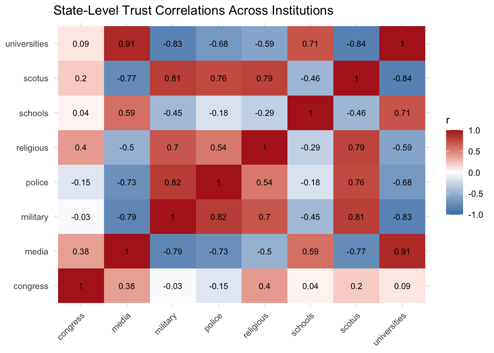
D: State Trajectories (Gallup TS)
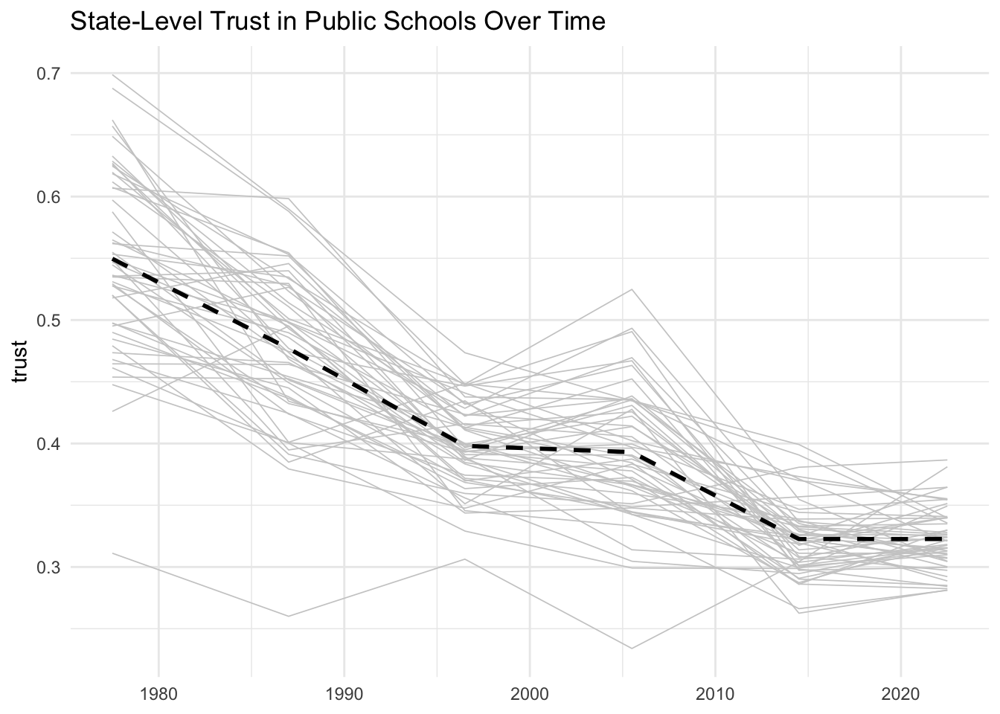
E: Ordinal Robustness Check
The main analysis collapses the four-point trust scale to a binary: “a great deal” and “quite a lot” versus “some” and “very little,” in line the standard Gallup reporting. This section confirms that the geographic and partisan patterns in the YouGov data are not artifacts of where the cutpoint falls.
First, state-level means are computed under all three possible binary cutpoints. That is, with only “a great deal” as high trust, with “a great deal” or “quite a lot,” the main specification, and with everything except “very little.” The rank correlations across states are:
# A tibble: 3 × 2
comparison spearman_r
<chr> <dbl>
1 top1 vs top2 0.850
2 top2 vs top3 0.906
3 top1 vs top3 0.750An ordinal cumulative link mixed model (CLMM) is estimated with the same predictors as the main binary model and a state random intercept. The state-level BLUPs from the ordinal model correlate with the binary model BLUPs at 0.92 (Spearman) and 0.93 (Pearson), confirming that the geographic pattern is not sensitive to functional form. The CLMM did not fully converge (max gradient = 0.0019 vs. tolerance = 1e-6), but the coefficients are consistent with the cutpoint-specific binary ones which did.
Spearman rank correlation (binary BLUP vs ordinal BLUP): 0.917 Pearson correlation (binary BLUP vs ordinal BLUP): 0.923 Finally, separate binary logistic regressions are estimated at each of the three cutpoints to test the proportional odds assumption. Under proportional odds, the partisan coefficients should be roughly constant across cutpoints.
# A tibble: 6 × 4
term estimate std.error cutpoint
<chr> <dbl> <dbl> <int>
1 pid3_mrpIndependent -1.34 0.0208 1
2 pid3_mrpRepublican -1.78 0.0203 1
3 pid3_mrpIndependent -0.994 0.0166 2
4 pid3_mrpRepublican -1.42 0.0175 2
5 pid3_mrpIndependent -0.944 0.0248 3
6 pid3_mrpRepublican -1.21 0.0266 3The Republican coefficient is largest at the bottom of the scale (cutpoint 1: -1.78) and smallest at the top (cutpoint 3: -1.21), with the main specification falling in between (cutpoint 2: -1.42). The proportional odds assumption is violated, meaning Republicans seem to be disproportionately concentrated at “very little” rather than uniformly less trusting. This means the binary cutpoint used in the main analysis, if anything, understates the intensity of the partisan gap.
F: Trump_z Model Comparison
# A tibble: 3 × 3
comparison spearman max_shift_pp
<chr> <dbl> <dbl>
1 A vs C (drop trump_z) 0.999 0.007
2 A vs D (trump_z only) 0.603 0.072
3 A vs B (drop STATE RE) 0.979 0.024Four specifications were compared to assess whether state-level Trump vote share can substitute for state random effects in the institutional comparison-style model. Model A is the full specification. Model B drops the state random intercept but retains state-indexed interactions and trump_z. Model C drops trump_z but retains all state random effects. Model D drops all state-indexed random effects and uses trump_z alone to generate geographic variation. Dropping trump_z produces nearly identical estimates (Spearman r = 0.999, max shift = 0.7pp), confirming that it is redundant once state random effects are present. Replacing the state random effects with trump_z alone produces substantially different state rankings (Spearman r = 0.60, max shift = 7.2pp). The modest geographic variation in school trust seems to reflect state-specific factors that a linear function of state partisanship cannot capture.
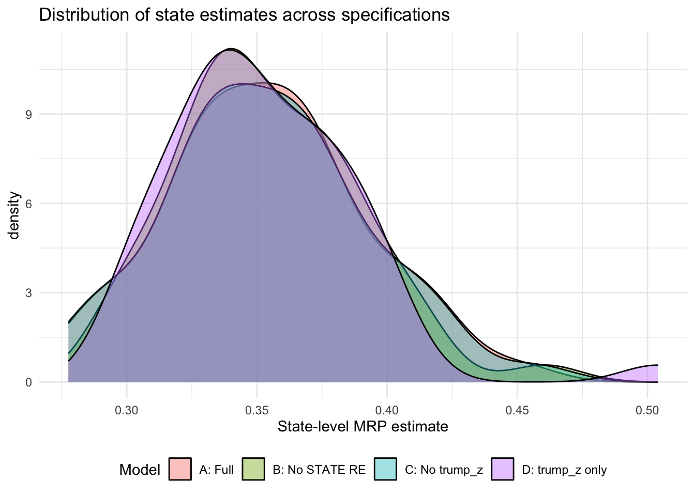
G: Posterior Diagnostics
All brms models converged with Rhat at or below 1.01 across all parameters. Effective sample sizes for regression coefficients exceeded 1000 in all models. Several state-level variance parameters had lower ESS, particularly STATE intercept SDs for police (Bulk_ESS = 326), universities (457), and schools comparison (634), reflecting the difficulty of estimating small variance components. One divergent transition was observed in the universities model out of 4000 post-warmup draws.